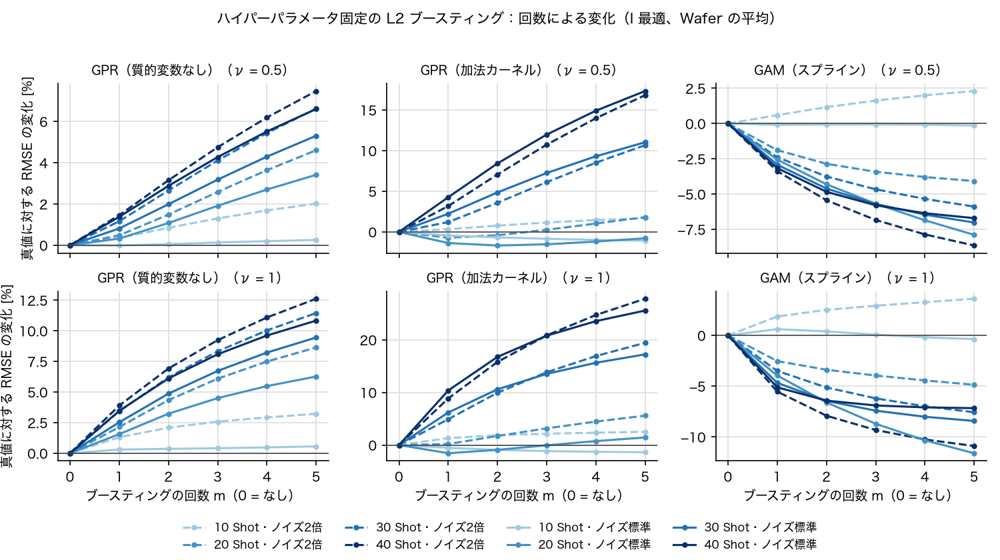
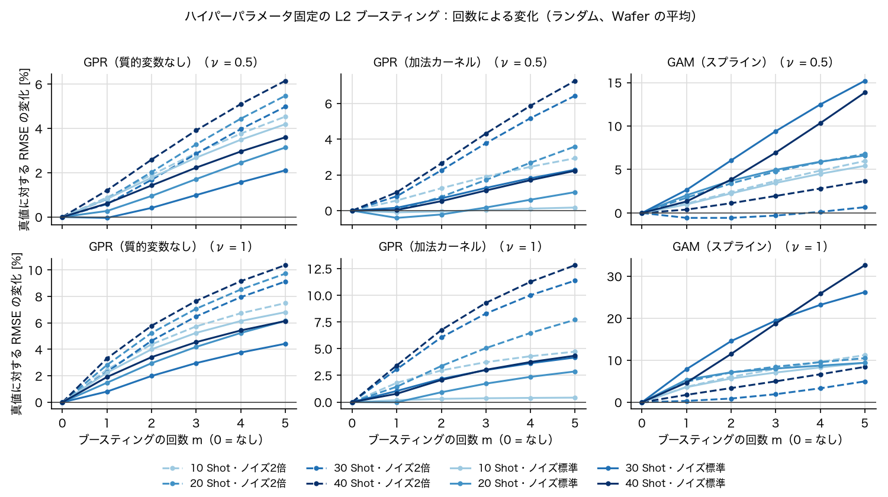
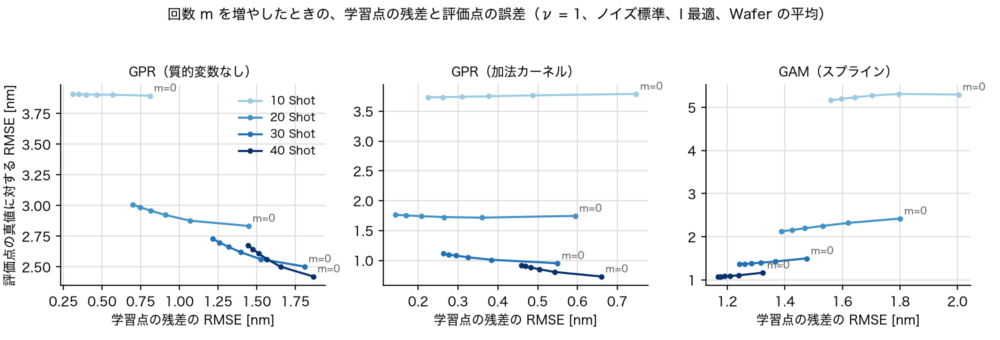
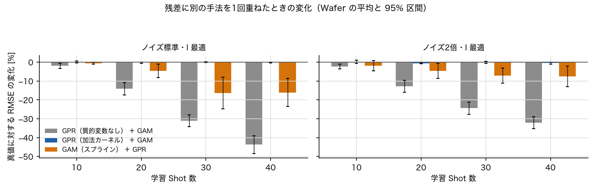
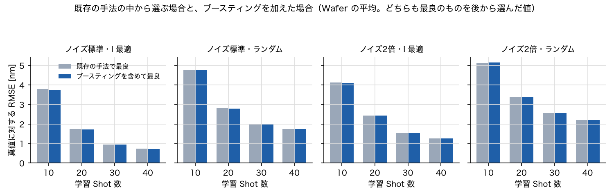

同じ手法を当てはめ直しても変わらない
残差に GPR・GAM を当てはめ直す（ハイパーパラメータも推定し直す）と、どちらも「残差に形は無い」と判断し、推定値はほぼ変わりません（全パターンで変化は最大 0.5%）。
Study Report · GPR / GAM
GPR と GAM にブースティング（取り残しにモデルを当てはめて足していく方法）を加えたとき、推定の精度がどれだけ変わるかを、 学習 Shot 数・Shot の選び方・計測ノイズを変えた 16 パターンの模擬データで調べ、実装する必要があるかを判断しました。
Summary
模擬データ（Wafer 16 枚 × ノイズ2通り）で、学習 Shot 数・選び方・ノイズを変えた 16 パターンを調べました。 今のツールで最も良い手法 GPR（加法カーネル） は 16 パターン中 16 パターンで最良で、 ブースティングを加えて、しかも結果を見てから最良の設定を選んでも、改善は最大 −1.8%（16 パターンで −1.8%〜+0.5%）でした。 前もって設定を1つに決めると、GPR（加法カーネル）は平均で +0.7%（16 パターン中 11 パターンで悪化）になります。
残差に GPR・GAM を当てはめ直す（ハイパーパラメータも推定し直す）と、どちらも「残差に形は無い」と判断し、推定値はほぼ変わりません（全パターンで変化は最大 0.5%）。
ハイパーパラメータを固定した古典的なブースティングは、GAM の I 最適・20〜40 Shot で −4.9%〜−11.6% 良くなる一方、ランダムでは 5 回で +5.0%〜+32.7% と悪くなります。GPR では多くのパターンで悪化しました。
GAM をブースティング・重ねで最も良くした値でも、ブースティングなしの GPR（加法カーネル）より +15%〜+43% 悪い。ブースティングを入れても、選ぶべき手法は変わりません。
結論の根拠は 4〜8章、なぜそうなるかは 9章、実装を考える場合の条件は 10章にまとめました。 数値は、真値（ノイズを足す前の値）に対する評価点の RMSE を Wafer ごとに比べた相対変化の平均です（負なら改善）。
Purpose
ブースティングは、一度推定したあとの「取り残し（学習点の残差 = 計測値 − 推定値）」に、もう一度モデルを当てはめて足し込み、 これを何回か繰り返して精度を上げる方法です。弱い（単純な）モデルを積み重ねて強いモデルを作るのが本来の使い方です。 このツールの GPR・GAM はすでに滑らかさをデータから選ぶ「強い」手法なので、足し込みで本当に良くなるのか、実装する価値があるのかを確かめました。
Method
アプリと同じ推定の関数（alignest.models の GPR・GAM）を使い、最初の当てはめはアプリの推定（estimateWafer）と同じ値になることを Wafer・パターンごとに確かめました（差の最大 0 nm）。
| 項目 | 内容 |
|---|---|
| データ | このリポジトリの模擬データの作り方（src/wafer_generator.py）で作った Wafer 16 枚（99 Shot × 4 Mark = 396 点）。値 = 面内傾向（Zernike 10〜30 項）＋ Mark ごとのずれ ＋ Scan 方向の差 ＋ 計測ノイズ。真値はノイズを足す前の値。 |
| ノイズ | 標準（一様分布、幅は中心 ±1 nm → 最外周 ±3 nm）と、その2倍（±2 → ±6 nm）。同じ Wafer でノイズだけを変えた。 |
| 学習 Shot 数 | 10・20・30・40 Shot（全 99 Shot のうち） |
| Shot の選び方 | 制約付き I 最適（初期設定）と、制約つきランダム（1回）。どちらもアプリと同じ作り方・同じ制約 |
| 手法 | GPR（matern52、説明変数 X,Y,半径、質的変数なし）、GPR（同、加法カーネルで Scan 方向・Mark 番号）、GAM（スプライン、説明変数 X,Y,半径、Scan 方向・Mark 番号）。X・Y は別々に当てはめる |
| 評価 | 学習しなかった Shot の Mark で、真値に対する RMSE（X・Y 合計）。計測値に対する RMSE（アプリの評価と同じ）も求めた |
| 変種 | やり方（y は学習点の計測値、F は推定値、h は残差に当てはめた値） |
|---|---|
| ブースティングなし | F0：手法をそのまま当てはめる（基準） |
| ① 当てはめ直す | r = y − Fm−1（学習点）に同じ手法を当てはめ直し（ハイパーパラメータ・λ も推定し直す）、Fm = Fm−1 + hm。m = 1〜3 |
| ② ハイパーパラメータ固定 | 同じ。ただし hm は F0 のハイパーパラメータ・λ のまま（古典的な L2 ブースティング）。Fm = Fm−1 + ν·hm、縮小率 ν = 0.5・1、m = 1〜5 |
| ③ 別の手法を重ねる | F0 の残差に別の手法を1回当てはめて足す。GPR には GAM、GAM には GPR（質的変数なし） |
相対変化=（変種の RMSE − ブースティングなしの RMSE）÷ ブースティングなしの RMSE × 100 [%]（負なら改善）
95% 区間=Wafer ごとの相対変化の平均 ± t（自由度 15）× 標準誤差
学習 Shot 数 4 × 選び方 2 × ノイズ 2 = 16 パターン、各パターン 16 枚。計算は MATLAB R2022b（Apple M1）で、当てはめの時間の合計は約 4 分（データの読み込み・Shot の選び方を含めて約 6 分）。
Result 1
残差に同じ手法を当てはめ直すと、推定値はほとんど変わりませんでした（手法 × パターンの 48 組で各 3 回、相対変化の絶対値は平均 0.001% 未満、最大 0.5%）。
GPR は、残差を当てはめるときに信号の大きさ σf をほぼ 0（例：0.003 nm）、ノイズ σn を残差の大きさにし、「残差は形の無いノイズ」と判断します。 GAM も REML で平滑化を最大にし、罰則の無い部分（定数・1次・質的変数の効果）は最初の当てはめで取り切っているので、足す値はほぼ 0 になります。 どちらも尤度・REML で滑らかさを選んでいるため、自分の残差に「まだ当てはめられる形」を見つけません。
このため、ブースティングを実装するなら、2回目以降はハイパーパラメータを固定する（②）など、手法の作りを変える必要があります。
Result 2
2回目以降を最初の当てはめのハイパーパラメータ・λ のままにすると、足す値が 0 でなくなり、推定は「平滑化を弱める」方向に進みます。



| パターン | GPR（質的変数なし） | GPR（加法カーネル） | GAM（スプライン） |
|---|---|---|---|
| ノイズ標準・I 最適・10 Shot | ν0.5・1回：−0.0%（−0.5%〜+0.5%） | ν1・5回：−1.4%（−3.4%〜+0.7%） | ν1・5回：−0.4%（−6.1%〜+5.4%） |
| ノイズ標準・I 最適・20 Shot | ν0.5・1回：+0.3%（−0.4%〜+1.1%） | ν0.5・2回：−1.7%（−3.4%〜+0.0%） | ν1・5回：−11.6%（−16.4%〜−6.8%） |
| ノイズ標準・I 最適・30 Shot | ν0.5・1回：+0.8%（+0.4%〜+1.2%） | ν0.5・1回：+2.2%（+1.3%〜+3.1%） | ν1・5回：−8.4%（−12.2%〜−4.6%） |
| ノイズ標準・I 最適・40 Shot | ν0.5・1回：+1.4%（+0.9%〜+1.9%） | ν0.5・1回：+4.3%（+3.5%〜+5.1%） | ν1・5回：−7.2%（−9.6%〜−4.7%） |
| ノイズ標準・ランダム・10 Shot | ν0.5・1回：+0.8%（−0.4%〜+2.0%） | ν0.5・1回：−0.1%（−0.9%〜+0.7%） | ν0.5・1回：+1.0%（−0.9%〜+2.9%） |
| ノイズ標準・ランダム・20 Shot | ν0.5・1回：+0.3%（−0.8%〜+1.3%） | ν0.5・1回：−0.4%（−1.4%〜+0.6%） | ν0.5・1回：+2.0%（+0.4%〜+3.7%） |
| ノイズ標準・ランダム・30 Shot | ν0.5・1回：−0.0%（−0.6%〜+0.5%） | ν0.5・1回：+0.2%（−0.4%〜+0.7%） | ν0.5・1回：+2.7%（−0.1%〜+5.4%） |
| ノイズ標準・ランダム・40 Shot | ν0.5・1回：+0.6%（+0.2%〜+1.0%） | ν0.5・1回：+0.0%（−0.6%〜+0.7%） | ν0.5・1回：+1.3%（−2.1%〜+4.8%） |
| ノイズ2倍・I 最適・10 Shot | ν0.5・1回：+0.4%（−0.3%〜+1.0%） | ν0.5・1回：+0.3%（−0.5%〜+1.2%） | ν0.5・1回：+0.6%（−1.1%〜+2.3%） |
| ノイズ2倍・I 最適・20 Shot | ν0.5・1回：+0.5%（−0.6%〜+1.5%） | ν0.5・1回：−0.7%（−1.9%〜+0.5%） | ν1・5回：−4.9%（−10.7%〜+1.0%） |
| ノイズ2倍・I 最適・30 Shot | ν0.5・1回：+1.2%（+0.5%〜+1.8%） | ν0.5・1回：+1.2%（+0.1%〜+2.3%） | ν1・5回：−7.6%（−11.4%〜−3.7%） |
| ノイズ2倍・I 最適・40 Shot | ν0.5・1回：+1.5%（+0.9%〜+2.0%） | ν0.5・1回：+3.2%（+2.0%〜+4.4%） | ν1・5回：−10.9%（−14.3%〜−7.5%） |
| ノイズ2倍・ランダム・10 Shot | ν0.5・1回：+0.9%（−0.5%〜+2.3%） | ν0.5・1回：+0.6%（−0.5%〜+1.7%） | ν0.5・1回：+1.1%（−0.8%〜+2.9%） |
| ノイズ2倍・ランダム・20 Shot | ν0.5・1回：+0.8%（−0.6%〜+2.2%） | ν0.5・1回：+0.0%（−1.4%〜+1.4%） | ν0.5・1回：+1.8%（+0.1%〜+3.4%） |
| ノイズ2倍・ランダム・30 Shot | ν0.5・1回：+0.6%（−0.0%〜+1.2%） | ν0.5・1回：+0.8%（+0.1%〜+1.5%） | ν0.5・1回：−0.6%（−1.4%〜+0.3%） |
| ノイズ2倍・ランダム・40 Shot | ν0.5・1回：+1.2%（+0.6%〜+1.8%） | ν0.5・1回：+1.0%（+0.1%〜+1.9%） | ν0.5・1回：+0.4%（−0.7%〜+1.5%） |
実際に使うときは結果を見てから設定を選べないので、手法ごとに 16 パターンの平均が最も良い ν・回数を1つに決めたときの変化を示します。
| 手法 | 決めた設定 | 16 パターンの平均 | 悪化したパターン | パターンごとの範囲 |
|---|---|---|---|---|
| GPR（質的変数なし） | ν = 0.5・1 回 | +0.7% | 14 / 16 | −0.0%〜+1.5% |
| GPR（加法カーネル） | ν = 0.5・1 回 | +0.7% | 11 / 16 | −1.4%〜+4.3% |
| GAM（スプライン） | ν = 0.5・1 回 | −0.4% | 8 / 16 | −3.4%〜+2.7% |
Result 3
同じ手法ではなく、別の手法を残差に1回重ねると（③）、手法によって大きく変わりました。

| パターン | GPR（質的変数なし） ＋ GAM | GPR（加法カーネル） ＋ GAM | GAM（スプライン） ＋ GPR |
|---|---|---|---|
| ノイズ標準・I 最適・10 Shot | −2.0%（−3.3%〜−0.6%） | +0.0%（−0.5%〜+0.5%） | −0.6%（−1.2%〜−0.1%） |
| ノイズ標準・I 最適・20 Shot | −14.1%（−17.5%〜−10.8%） | −0.3%（−0.6%〜+0.1%） | −4.6%（−8.1%〜−1.1%） |
| ノイズ標準・I 最適・30 Shot | −31.1%（−34.3%〜−27.9%） | −0.1%（−0.2%〜+0.1%） | −16.4%（−24.7%〜−8.1%） |
| ノイズ標準・I 最適・40 Shot | −43.7%（−48.4%〜−39.0%） | −0.1%（−0.3%〜+0.1%） | −16.1%（−23.5%〜−8.6%） |
| ノイズ標準・ランダム・10 Shot | −5.5%（−7.6%〜−3.3%） | +0.4%（−0.5%〜+1.3%） | −0.1%（−0.3%〜−0.0%） |
| ノイズ標準・ランダム・20 Shot | −11.6%（−14.4%〜−8.8%） | −0.2%（−0.3%〜−0.0%） | −0.7%（−1.2%〜−0.2%） |
| ノイズ標準・ランダム・30 Shot | −19.4%（−22.4%〜−16.4%） | +0.0%（−0.0%〜+0.1%） | −2.8%（−4.4%〜−1.2%） |
| ノイズ標準・ランダム・40 Shot | −24.3%（−27.5%〜−21.1%） | −0.0%（−0.0%〜+0.0%） | −2.7%（−3.9%〜−1.5%） |
| ノイズ2倍・I 最適・10 Shot | −2.3%（−3.5%〜−1.0%） | +0.3%（−0.6%〜+1.2%） | −1.8%（−4.6%〜+0.9%） |
| ノイズ2倍・I 最適・20 Shot | −12.8%（−16.0%〜−9.7%） | −0.6%（−0.9%〜−0.2%） | −4.6%（−8.7%〜−0.6%） |
| ノイズ2倍・I 最適・30 Shot | −24.4%（−27.7%〜−21.2%） | −0.1%（−0.6%〜+0.3%） | −7.1%（−11.1%〜−3.1%） |
| ノイズ2倍・I 最適・40 Shot | −32.1%（−35.2%〜−29.0%） | −0.5%（−1.0%〜+0.0%） | −7.6%（−12.9%〜−2.2%） |
| ノイズ2倍・ランダム・10 Shot | −4.2%（−6.3%〜−2.2%） | +0.6%（−0.6%〜+1.8%） | −0.4%（−0.9%〜+0.2%） |
| ノイズ2倍・ランダム・20 Shot | −10.3%（−13.1%〜−7.5%） | −0.4%（−0.7%〜−0.1%） | −0.6%（−0.9%〜−0.2%） |
| ノイズ2倍・ランダム・30 Shot | −16.6%（−19.3%〜−13.8%） | +0.1%（−0.1%〜+0.2%） | −2.0%（−3.3%〜−0.7%） |
| ノイズ2倍・ランダム・40 Shot | −20.1%（−23.0%〜−17.2%） | −0.1%（−0.3%〜+0.1%） | −2.8%（−4.9%〜−0.7%） |
Result 4
実装の必要性は、「ブースティングを入れないと得られない改善があるか」で決まります。パターンごとに、今の手法から最も良いもの（ブースティングなし）と、 ブースティング・重ねを含めて最も良いものを比べました。どちらも結果を見てから選んだ値なので、ブースティング側に有利な比べ方です。

| パターン | 今の手法で最良（RMSE nm） | ブースティングを含めて最良（RMSE nm） | 差 | GAM を最も良くした値（GPR 加法との差） |
|---|---|---|---|---|
| ノイズ標準・I 最適・10 Shot | GPR（加法カーネル） 3.789 | GPR（加法カーネル） ② 固定 ν1.0・5 回 3.733 | −1.5% | 5.164（+36%） |
| ノイズ標準・I 最適・20 Shot | GPR（加法カーネル） 1.745 | GPR（加法カーネル） ② 固定 ν0.5・2 回 1.714 | −1.8% | 2.125（+22%） |
| ノイズ標準・I 最適・30 Shot | GPR（加法カーネル） 0.951 | GPR（加法カーネル） ③ ＋GAM 0.951 | −0.1% | 1.209（+27%） |
| ノイズ標準・I 最適・40 Shot | GPR（加法カーネル） 0.730 | GPR（加法カーネル） ③ ＋GAM 0.729 | −0.1% | 0.953（+31%） |
| ノイズ標準・ランダム・10 Shot | GPR（加法カーネル） 4.763 | GPR（加法カーネル） ② 固定 ν0.5・1 回 4.762 | −0.0% | 6.792（+43%） |
| ノイズ標準・ランダム・20 Shot | GPR（加法カーネル） 2.804 | GPR（加法カーネル） ② 固定 ν0.5・1 回 2.788 | −0.6% | 3.670（+31%） |
| ノイズ標準・ランダム・30 Shot | GPR（加法カーネル） 2.010 | GPR（加法カーネル） ③ ＋GAM 2.010 | +0.0% | 2.376（+18%） |
| ノイズ標準・ランダム・40 Shot | GPR（加法カーネル） 1.737 | GPR（加法カーネル） ③ ＋GAM 1.737 | −0.0% | 2.140（+23%） |
| ノイズ2倍・I 最適・10 Shot | GPR（加法カーネル） 4.121 | GPR（質的変数なし） ③ ＋GAM 4.108 | −0.3% | 5.348（+30%） |
| ノイズ2倍・I 最適・20 Shot | GPR（加法カーネル） 2.445 | GPR（加法カーネル） ② 固定 ν0.5・1 回 2.429 | −0.7% | 2.821（+15%） |
| ノイズ2倍・I 最適・30 Shot | GPR（加法カーネル） 1.543 | GPR（加法カーネル） ③ ＋GAM 1.541 | −0.1% | 1.867（+21%） |
| ノイズ2倍・I 最適・40 Shot | GPR（加法カーネル） 1.265 | GPR（加法カーネル） ③ ＋GAM 1.259 | −0.5% | 1.520（+20%） |
| ノイズ2倍・ランダム・10 Shot | GPR（加法カーネル） 5.140 | GPR（加法カーネル） ② 固定 ν0.5・1 回 5.167 | +0.5% | 7.295（+42%） |
| ノイズ2倍・ランダム・20 Shot | GPR（加法カーネル） 3.396 | GPR（加法カーネル） ③ ＋GAM 3.382 | −0.4% | 4.067（+20%） |
| ノイズ2倍・ランダム・30 Shot | GPR（加法カーネル） 2.551 | GPR（加法カーネル） ③ ＋GAM 2.553 | +0.1% | 2.967（+16%） |
| ノイズ2倍・ランダム・40 Shot | GPR（加法カーネル） 2.211 | GPR（加法カーネル） ③ ＋GAM 2.209 | −0.1% | 2.663（+20%） |
今の手法の最良は 16 パターン中 16 パターンで GPR（加法カーネル）で、ブースティングを含めても差は −1.8%〜+0.5% でした。 最も良い設定はパターンごとに違い（② 固定の ν・回数、③ ＋GAM）、前もって決めると 5章のとおり平均では悪化します。 GAM を最も良くしても、GPR（加法カーネル）より +15%〜+43% 悪いままです。
Result 5
アプリは真値ではなく計測値（ノイズを含む）で評価します。計測値に対する RMSE で同じ相対変化を求めると、真値に対する相対変化との相関は 0.96、 改善・悪化の向きが一致した割合は 97% でした。実データで同じ比較をしても、同じ結論になると考えられます。
Discussion
Proposal
Reproduce
リポジトリの直下で .venv/bin/python matlab_app/docs/boosting_study/_src/make_boosting_data.py <データのフォルダ>。boosting_standard.csv・boosting_high.csv（各 16 枚）ができる。CSV はリポジトリに入れない（.gitignore で除外）。
matlab_app と docs/boosting_study/_src をパスに入れ、run_boosting_study("<データのフォルダ>", "<結果の CSV>")。約 6 分（Apple M1）で 11520 行の結果ができる。
.venv/bin/python matlab_app/docs/boosting_study/_src/analyze_boosting.py <結果の CSV>。images の図と _src/summary.json ができる。
.venv/bin/python matlab_app/docs/boosting_study/_src/build_report.py。本文と表の数値は summary.json から入る。
Limits